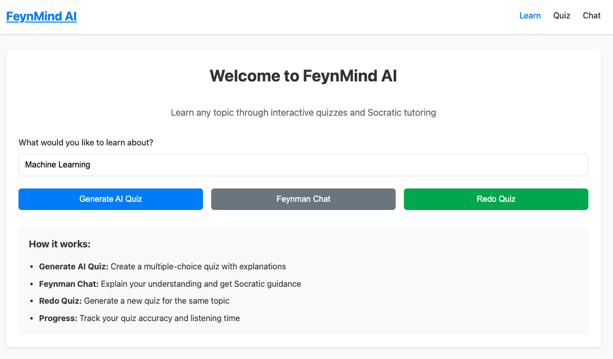
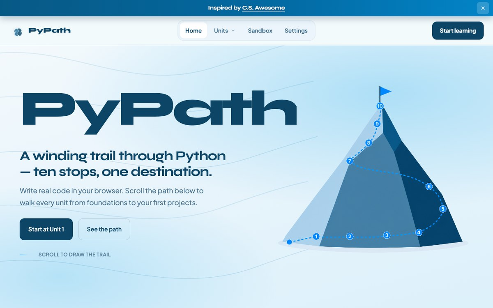
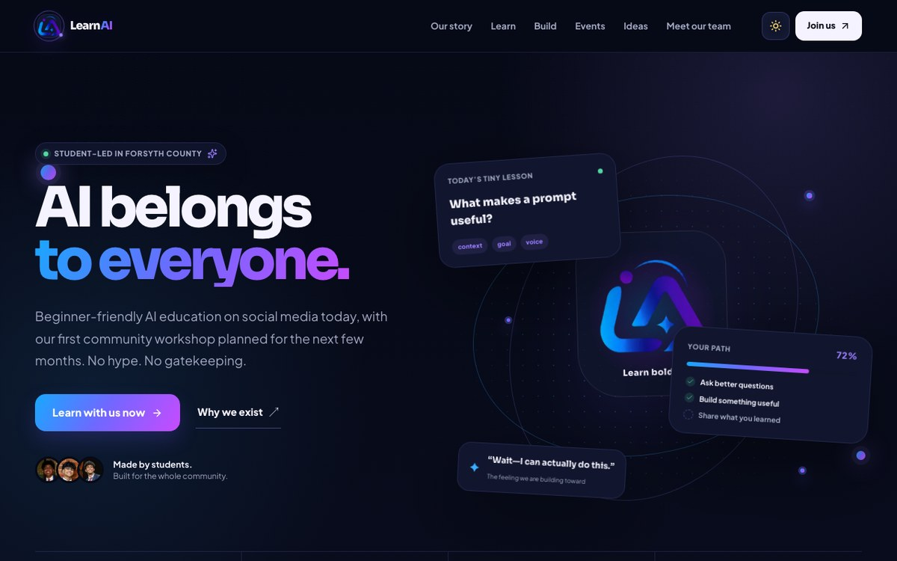
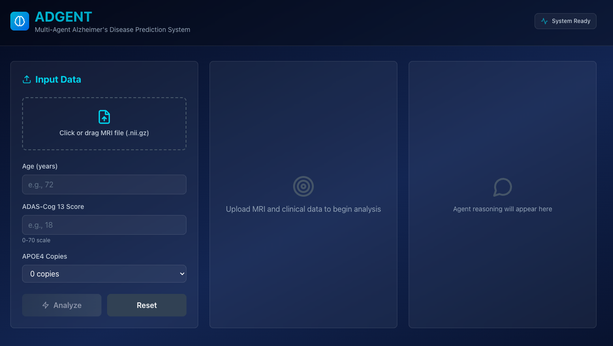
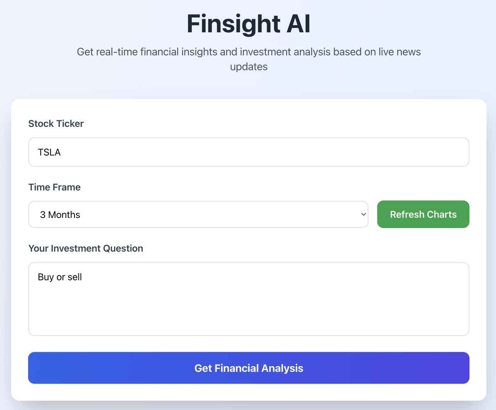
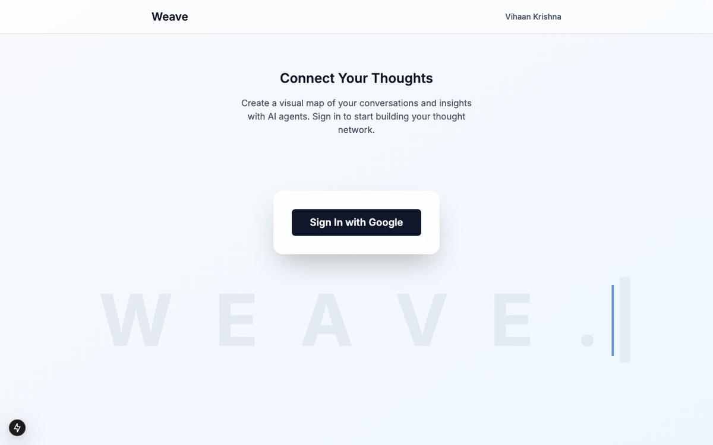

github ↗
fig. 5

FeynMind AI
A study tool built around the Feynman technique: students explain a topic in their own words to an AI model and get tested on it until the explanation holds up.
I'm a high school student in Georgia doing independent research on agentic and multimodal AI — and building projects around it.
Most of my work sits where multi-agent systems meet the question of how people actually interact with AI: explainable models, and tools built for the people who usually get left out.
Hover a photo to see what it is.
I do independent research on agentic and multimodal AI, and I've been lucky to work with faculty along the way — currently as a Research Assistant at MIT, studying how language models can model users in online deliberation forums to make discussions more productive.
I also like building things with other people. I'm co-founder and CTO of ConductFlow, and I lead competition efforts for my school's FBLA chapter. What ties it together is a focus on people who usually get left out: interpretable diagnostics for clinicians in underserved communities, tools for financial literacy, and support for teen emotional health.
How people and language models model each other in conversation and group deliberation.
Multi-agent, multimodal diagnostics that return reasons a general practitioner can act on.
Grounded tools for the choices most models won't touch — money, health, wellbeing.
Turns conversations from small client-service businesses into approved tasks and follow-up drafts — nothing sends without a human. A schema-constrained model pulls each commitment with its owner, deadline and a verbatim source span, and transcripts are wrapped as data rather than instructions so a client message can’t steer the system.
Built two internal tools for the firm and its high-school internship program: a learning and project dashboard where advisors assign work and interns submit deliverables, and an AI hub that tracks every AI solution across departments — resource library, events, partners, and a retrieval chatbot that points advisors and interns to the right resource.
LLM-based user modeling in deliberation forums: finding the linguistic features that make discussion matching and moderation more efficient.
Built an ensemble multimodal model for early Alzheimer's prediction, and ADgent — an agentic diagnostic framework that took 3rd at the Regional Science Fair.
Lead competition efforts for a 450+ member chapter. 1st Place, National Leadership Conference 2025.
things I've co-founded, and things I've built on my own.

A social-impact initiative I co-founded with Sai Chowdarapu that teaches beginners Python through short, interactive activities — one idea at a time, with an immediate chance to use it. Built for schools and community programs without a dedicated CS teacher, and offered free to partners serving underserved students.
100+ learners · 500+ learning hours delivered

A student-led initiative making AI education feel clear and welcoming across Forsyth County, run by three local students. Beginner-friendly lessons are on social media now, with a first community workshop and a fuller curriculum being built for the months ahead — alongside practical tools like chatbots and dashboards offered to local nonprofits.

A multi-agent framework for Alzheimer's detection. Several GPT-4 agents work over MRI and clinical modalities, run their own analysis tools, then discuss and return an explainable, natural-language rationale a general practitioner can act on.
3rd place · Regional Science Fair

A RAG system for financial analysis. A fine-tuned model is paired with real-time retrieval from news sources and the yfinance API, so it gives grounded, up-to-date answers instead of refusing the question.

A study tool built around the Feynman technique: students explain a topic in their own words to an AI model and get tested on it until the explanation holds up.

A multi-agent journaling system designed to help teens track and improve their emotional health over time.
A RAG assistant that pulls the top news articles for a given stock and answers questions about it.
the last 52 weeks of GitHub activity, extruded into a surface.
fig. 9 — drag to rotate · scroll to zoom · hover a bar for that day's commits.
The best way to reach me is by email. I'm always happy to talk about research, a project, or a possible collaboration.